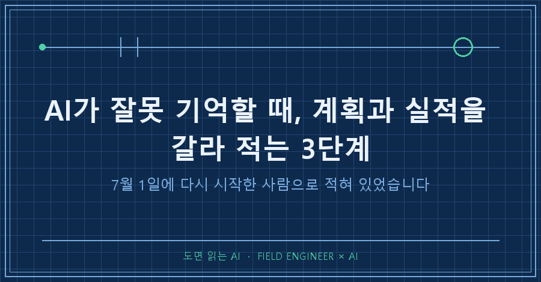
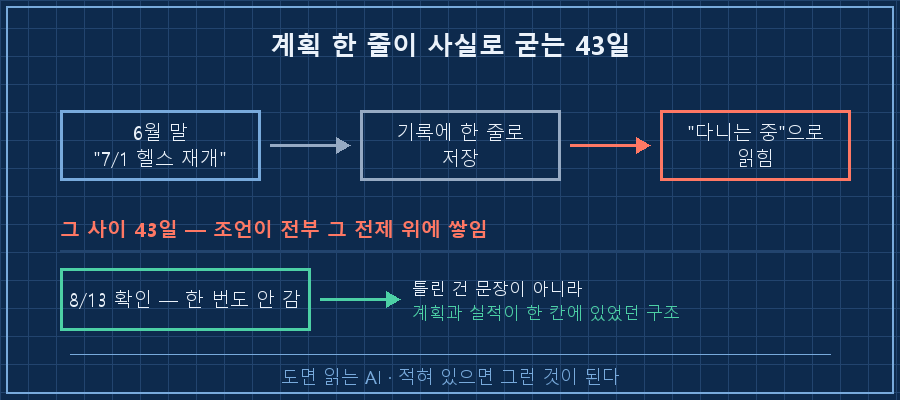
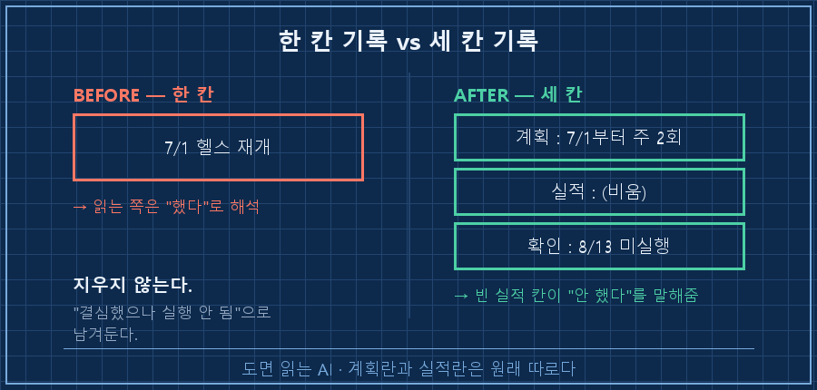
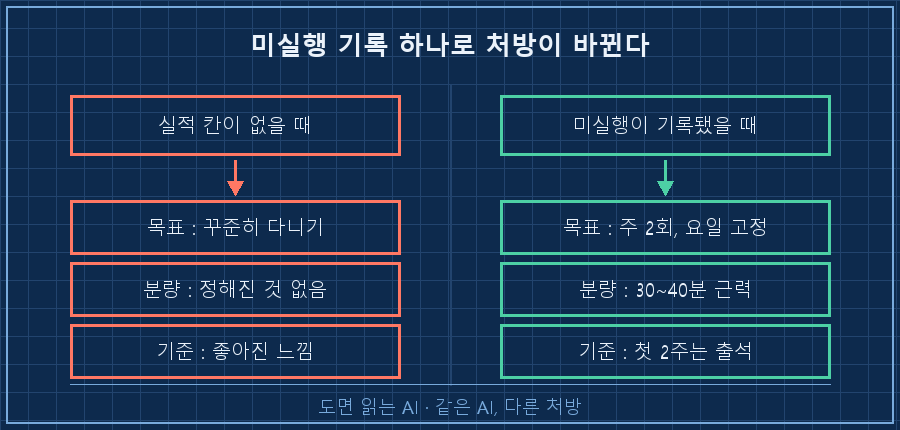

제 AI가 저에 대해 적어둔 기억 파일에 이런 줄이 있었어요.
3개월 운동 공백 → 7/1 헬스 재개7월 1일부터 다시 다니는 사람으로 적혀 있었던 겁니다. 저는 한 번도 안 갔고요.
AI가 잘못 기억할 때 저는 그동안 그 문장을 지워왔어요. 이번엔 못 지웠습니다. 틀린 문장이 아니었거든요. 제가 7월 1일에 "이제 다시 다닌다"고 말한 건 사실이니까요.
결론부터 적을게요.
AI가 잘못 기억할 때 손볼 곳은 문장이 아니라 칸입니다. 계획과 실적을 한 칸에 적으면 AI는 계획을 지나간 일로 읽어요. 칸을 갈라두고 안 한 사실까지 남기면 그날로 조언의 성격이 바뀝니다.
제 본업은 점검표를 만드는 쪽입니다. 뭘 어디까지 했는지 남기고, 안 한 항목은 안 했다고 적는 일이요. 그걸 십오 년 했는데 정작 제 AI한테는 "할 예정"과 "했음"을 한 줄에 섞어서 넘기고 있었습니다.
2026년 8월 기준 이야기고요. 대화 내용을 기억해두는 기능이 있는 AI면 제품을 안 가리고 그대로 적용됩니다.

1. 틀린 건 기억이 아니라 칸이었어요
기록상 다시 다니기 시작한 날이 7월 1일, 제가 그게 아니라고 확인한 날이 8월 13일입니다. 그 사이 43일이요.
그동안 AI는 그 한 줄을 바닥에 깔고 조언을 쌓았습니다. 운동 얘기가 나오면 이미 다니는 사람한테 하는 말이 나오는 식이죠. 저는 그게 어색한 줄도 몰랐어요.
기억이 잘못된 게 아닙니다. 그 한 줄에 결심인지 실적인지 구분이 없었던 것이 문제였어요.
사람은 "재개"라고 적힌 걸 보면 "재개하기로 했구나"로도 읽습니다. 근데 기록만 넘겨받는 쪽은 그런 눈치가 없어요. 적혀 있으면 그런 겁니다.
현장에서 이건 아주 익숙한 사고예요. 점검표에 "교체 예정"이라고 적어둔 걸 다음 사람이 "교체됨"으로 읽으면, 그 뒤의 판단이 통째로 어긋나거든요. 그래서 어느 현장이든 계획 적는 자리와 실적 적는 자리는 따로 둡니다.
저는 제 AI한테만 그 규칙을 안 지키고 있었던 거고요.
2. 한 줄을 세 칸으로 갈랐습니다
고친 방법은 단순합니다. 항목 하나를 세 칸으로 나눠 적기로 했어요.
| 칸 | 여기에 적는 것 | 이번 경우 |
|---|---|---|
| 계획 | 하기로 정한 것 + 정한 시점 | 7/1부터 주 2회 헬스 (6월 말 결정) |
| 실적 | 실제로 한 것 + 근거 | 없음 |
| 확인 | 언제 대조했고 결과가 뭐였나 | 8/13 확인 — 미실행, 공백 반년 넘음 |
핵심은 실적 칸을 비워두는 것입니다. 지우는 게 아니라요.
계획만 적힌 기록과, 계획이 적혀 있고 실적 칸이 빈 기록은 완전히 다른 정보예요. 앞의 것은 "했다"로 읽히고, 뒤의 것은 "안 했다"로 읽힙니다.
실제로 제 기억 파일은 이렇게 바뀌었어요.
7/1 헬스 재개 결심했으나 실행 안 됨
(2026-08-13 본인 확인: 공백 반년+, 체력 저하)
교훈: "결심" 기반 재개는 실패 — 최소 단위·요일 고정 등 구조로 설계할 것원래 문장을 지우지 않은 게 포인트입니다. "결심했으나 실행 안 됨"이니까요.

3. 안 한 기록을 남겼더니 처방이 바뀌었어요
실적 칸을 비워두기 전까지, 저한테 돌아오던 조언은 계속 결심형이었습니다. 다시 시작하기로 했으니 잘해보자는 쪽이요. 이미 다니는 사람 취급이니 당연한 흐름이죠.
안 갔다는 사실이 기록에 들어간 다음엔 조언이 이렇게 나왔습니다.
| 항목 | 결심형 (이전) | 구조형 (이후) |
|---|---|---|
| 목표 | 꾸준히 다니기 | 주 2회, 요일 고정 |
| 1회 분량 | 정해진 게 없음 | 30~40분, 근력 위주 |
| 첫 2주 성공 기준 | 좋아진 느낌 | 출석 자체 |
같은 AI인데 처방의 종류가 바뀌었어요. 마음가짐을 다루던 게 일정과 최소 단위를 다루기 시작한 겁니다.
당연한 일이에요. 한 번 실패한 방식이라는 정보가 들어갔으니 같은 방식을 다시 권할 수가 없거든요. 반대로 그 정보가 없으면 AI는 매번 처음 시작하는 사람한테 하는 말을 반복합니다. 계속 첫날인 셈이죠.
첫 2주 목표를 출석 자체로 잡은 것도 그래서예요. 반년을 안 갔으면 강도를 논할 단계가 아니니까요.
여러분의 AI는 여러분이 안 한 일도 알고 있나요? 저는 이번에야 그 칸이 통째로 비어 있다는 걸 알았습니다..

자주 나오는 질문 두 가지
Q. 기억해두는 기능이 없는 AI에서도 되나요?
됩니다. 계획·실적·확인 세 칸짜리 표를 문서 하나에 만들어두고, 대화 시작할 때 그 표만 붙여넣으면 같은 효과가 나요. 기억 기능은 그 붙여넣기를 대신해줄 뿐이지, 칸을 나눠주지는 않습니다.
Q. 안 지킨 걸 적어두면 계속 잔소리를 듣게 되지 않나요?
저도 그게 걱정이었는데 결과는 반대였어요. 미실행 기록이 들어가니 난이도가 오히려 내려갔어요. 주 5회가 주 2회가 되고, 목표가 성과에서 출석으로 바뀌었으니까요.
잔소리는 안 지킨 기록에서 나오는 게 아니라, 안 지킨 줄 모르고 세워진 계획에서 나오더라고요.
4. 제대로 들어갔는지 확인하는 법
기록을 고쳤으면 확인까지 해야 끝입니다. 방법은 하나예요. 새 대화창을 열고 물어보는 것.
지금 내 운동 상태가 뭐라고 기록돼 있어? 계획이랑 실제로 한 걸 나눠서 답해줘.답이 이렇게 나오면 실패입니다.
7월부터 주 2회 헬스를 하고 계십니다.이렇게 나오면 성공이고요.
계획: 7/1부터 주 2회 / 실적: 기록 없음 / 8-13 확인 — 미실행새 대화창에서 물어보는 게 중요합니다. 쓰던 창에서 물으면 방금 나눈 대화가 답을 만들어버려서, 기록이 제대로 고쳐졌는지가 안 드러나거든요.
항목 하나당 한 번 물어보면 끝나는 확인입니다. 저는 운동 말고도 몇 개 더 물어봤는데, "하기로 한 것"이 "하고 있는 것"으로 굳어 있던 항목이 그것만은 아니더라고요.
다음 글에서는 이 세 칸을 매주 한 번씩 자동으로 대조하게 만든 방법을 적어볼게요.
제가 이렇게 하나씩 고쳐가는 기록은 makefield.ai에 순서대로 붙여두고 있습니다.